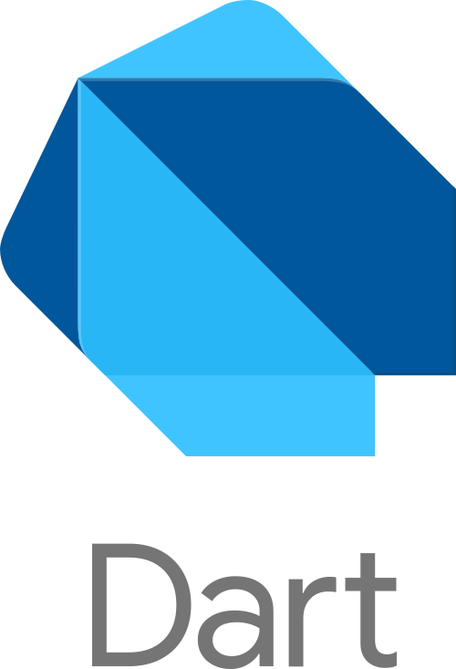

Na verdade, os dois se complementam.
A principal explicação quando se compara Dart e Flutter é que enquanto Dart é a linguagem de programação que baseia Flutter, Flutter se trata de framework de Interface de Usuário que utiliza widgets como base.
O Flutter é um framework. Um kit de funcionalidades que fornece ao Dart a capacidade de fazer um aplicativo sem precisar importar outros códigos. Flutter depende de Dart para funcionar.
Dart é uma linguagem de programação de propósito geral, baseada em C, focada em alto desempenho e multiplataforma. Ela é multiparadigma, porém focada em orientação a objetos.